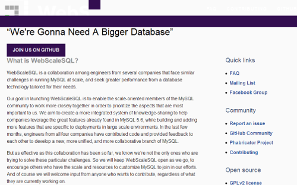

也紀念我們永遠的朋友 李士傑先生（Shih-Chieh Ilya Li）。
MySQL 變形版–迎合巨量資料庫所需的 WebScaleSQL 問世
Facebook、Google、LinkedIn，與 Twitter，日前宣布 以自由開源授權版本的 MySQL 為基礎，攜手合作為處理巨量資料庫的網路公司，量身打造進化版本，名稱就叫作 WebScaleSQL。Facebook 工程師 Steaphan Greene 也在 Engineering Blog上發布相關訊息，表示打造 WebScaleSQL 變形專案的首要目的，就是要改造 Oracle 承繼昇陽成果的 MySQL，以切合巨量資料所需。
▲ 圖1：WebScaleSQL 官方網站截圖，該專案的程式碼以 GPL-2.0 授權託管於 GitHub，並於 Facebook 同步設立社團分頁。
Greene 表示為了要處理超過 12 億名 Facebook 使用者的資料，必須要有強大先進的基礎建設支撐，這其中就包含對 MySQL 配置的優化與改變。Greene 希望該項計畫，能夠打造一個針對巨量資料、且有助於企業善加利用原有 MySQL 5.6 版本優勢功能的知識分享整合系統。大要來說，WebScaleSQL 與 MariaDB 的設定角色不同，MariaDB 為 MySQL 資料庫專案的完全衍生與替代方案，但 WebScaleSQL 則並非 MySQL 完整功能的分支，而是為了切合大型網路資料儲放所需，所將 MySQL 加以修改、優化的分支 (Branch)。至於特別選擇 MySQL 5.6 版本的原因，WebScaleSQL 網站指出，是因為其功能完備性剛好切中所需，其更新版本 MySQL-5.7 的基礎架構也更動不大所致，不過日後仍會因應情況隨時檢討相關決策的方向。
Greene 表示，WebScaleSQL 會持續以自由開放源碼的模式釋出，以讓其他對此有興趣的開發者，能一同加入客製化 MySQL 的行列，而開放源碼的共工模式，也才能確保系統的品質與穩定度。由於大部份的程式碼將承繼與衍生自 MySQL 的開源版本，故 WebScaleSQL 專案的主要授權策略，仍延用 GPL-2.0 的 Copyleft 授權模式。而這幾家巨型公司要如何分工合作來打造 WebScaleSQL 呢？據說是 Facebook 負責開發 WebScaleSQL 的基礎框架，Google 則加以檢視與提供進一步的修改建議；LinkedIn 也是負責檢視工作，至於 Twitter 則會在效能改進上做出貢獻。
目前 WebScaleSQL 在改造 MySQL 上已經有重要成果出現，像是能夠執行與發布 MySQL 內建測試系統成果 (mtr) 的自動化框架；全新的壓力測試套件，與自動化效能測試系統原型 (A suite of stress tests and a prototype automated performance-testing system)；對現有程式碼結構的更改，以避免原本會出現的程式碼衝突問題，還有像是改善記憶體緩衝與重刷的反應時間、資料查詢功能的優化，及針對網路環境著手的效能改善，以及隨使用者層級不同所精化的權限控管，和使用端失聯怠速所配套的定時登出功能添加。目前該計畫正著手將 Facebook 之前針對網站效能改善，所進行測試所得的表格、使用者資訊，以及資料壓縮演算法等解決方案，轉移至 WebScaleSQL 專案來進行呈現，這些因應大型網路資料庫才會碰到的使用挑戰與經驗，將有助於 WebScaleSQL 在調校之後，更能在大量使用者瀏覽的狀態下一樣提供高效率的資訊服務，並更機動式的在系統被低度利用的時段，能自動地啟動資料的備份機制。
而雖然目前 MySQL 原作者 Michael Widenius (Monty) 所主力參與的 MariaDB 分支版本，在自由開源軟體社群間的聲勢似乎已慢慢凌駕 Oracle 作為權利繼受公司所推出的 MySQL，不過在這些社交網路巨頭公司的支援下，MySQL 進化版的 WebScaleSQL，仍將成為處理 petabytes 或 terabytes 等級的巨量資料企業，切切不可忽視的新發展！
參考網址：
- WebScaleSQL：為 Facebook 般規模的網路資料庫打造的 MySQL
- Facebook、Google、LinkedIn，與 Twitter 合作建置 WebScaleSQL 專案
- Facebook、Google 等跨國巨型公司利用 MySQL 5.6 版打造 WebScaleSQL
Special


Address：No.128, Sec.2, Academia Rd., Institute of Information Science, Academia Sinica, Nangang District, Taipei City 11529, Taiwan (R.O.C).
Privacy Policy. Terms-of-use